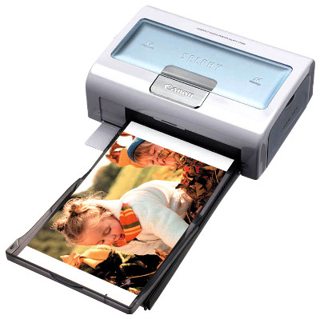
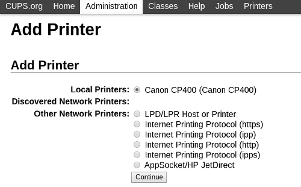
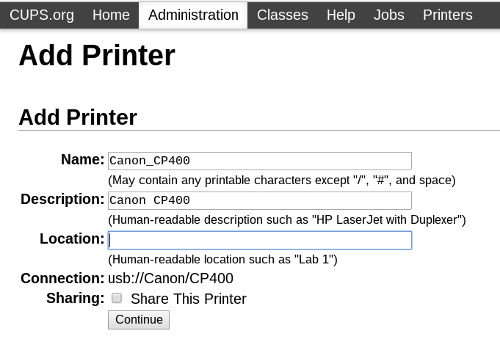
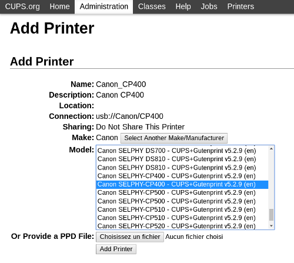
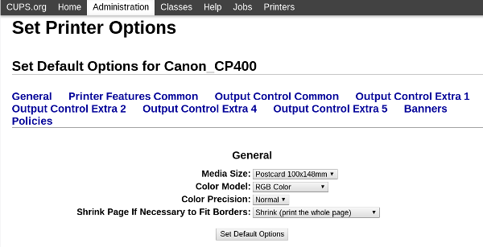

This tutorial describe how to install a portable photo printer (Canon Selphy CP400). This device is normaly use for direct printing with Canon compact digital camera. But, this uncommon printer is pretty well supported by cups with gutenprint driver.

Kernel configuration
- Add support for USB printer.
# make menuconfig
Device Drivers --->
[*] USB support --->
<*> USB Printer support
Install Cups and GutenPrint
- Define compilation option
# nano /etc/portage/package.use
net-print/gutenprint gimp gtk
net-print/cups -usb
- Install
# emerge -pv cups gutenprint
- Start Cups
# systemctl start cups.service
Add printer
- Open administration page : http://localhost:631/admin




- Configure Cups client
# nano /etc/cups/client.conf
ServerName localhost
Test printing
-
Scale an image with Gimp (ratio : 100x148mm)
-
Define print options (with Gimp) :
- Page setup : check orientation
- Image setting : increase size until maximum
- Advanced : borderless = yes